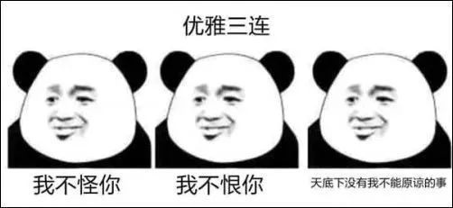

要不要来做个实验？
走完上面的程序再往下看
病名为杠：给我一个支点，我能杠飞地球……
我们意在研究杠精行为是否与内隐攻击性有关。 假设它们之间具有相关关系，由于杠精是一类通过攻击别人获得快感的群体，因此我们假设内隐利他高的人可能杠精程度低，即内隐攻击性高的人可能杠精行为也比较多，杠精行为少的人可能内隐攻击性较低。
在问卷调查中，先统计所有被试对于杠精行为的定义，并且给行为算出一个相应的杠精分数。然后再用这个分数来计算被试自己选择的行为得分，综合杠精程度自评，得出一个总的杠精指数。 在内隐联想测验中，每个被试最后会得到一个内隐利他分数——D值。D 值为不相容与相容任务平均反应时之差。该研究中D值越大，代表利他与自我属性词汇的联结越强，内隐攻击性也就越低。
1.由于杠精一般不会承认自己这一特质，而攻击性也不易于从观察或问卷中得出，所以选用内隐联想测验（Implicit Association Test，简称IAT）的方式测试内隐攻击性。2.Greenwald等的社会知识结构模型认为,知识的基本单元是概念,概念按语义关系形成语义网络,联结强度反映出概念间联系的紧密程度。研究者通过考察个体在相容和不相容任务中，操作成绩(如反应时或者错误率)的差异,以IAT效应作为指标，来考究概念联结是否存在以及概念联结间的紧密程度，从而判断被试的内隐攻击性。 根据实验，如果属于“自我”与“利他”词汇的联系较为紧密，即内隐攻击性较低。最后得出一个内隐利他成绩（D值），然后反过来判断内隐攻击性。3.内隐测量与自我报告式测量的区别是：能有效减少被试对反应的有意识控制，测量到不易表达出来的态度和认识。这对检测攻击性（非利他行为）这种带有负面含义的特质能较为准确。为了提升准确性，问卷采用单盲的形式。